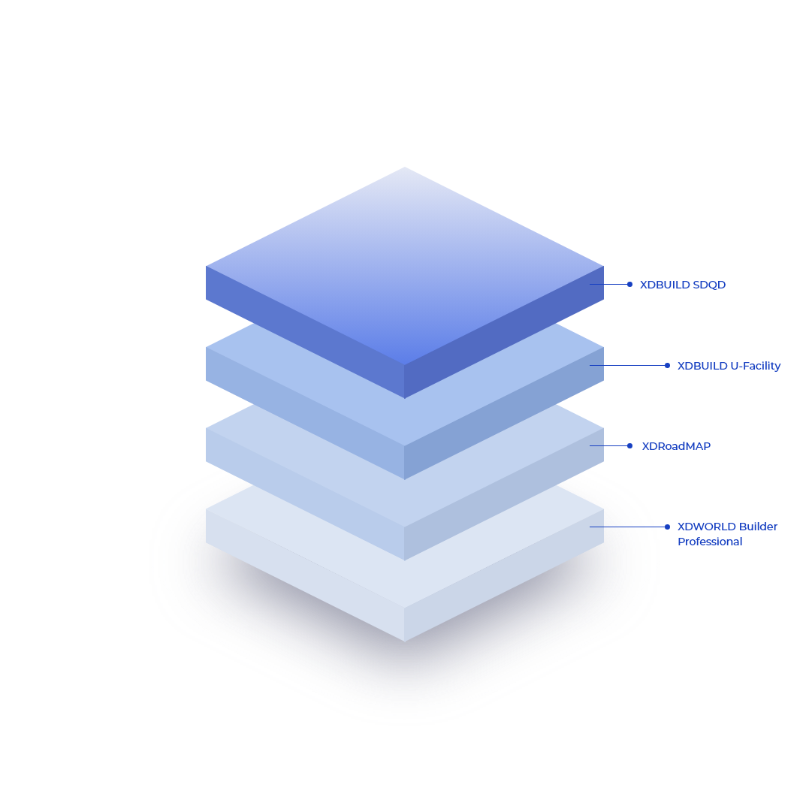

XDBUILD

디지털트윈, 공간정보
데이터 구축 툴
· 디지털트윈 서비스를 위한 그 첫번째는 지상/지하/실내/외 등 각 산업별 3차원 데이터 구축이 중요
· 이를 위해 정밀도로지도, 실내외지도, 건설데이터 BIM처리용 등 데이터 구축용 솔루션 제공
· 다년간 축척된 데이터 구축 노하우를 반영하여 사용자 중심의 구축 기능 제공
- XDWORLD Builder Professional
- XDRoadMAP
- XDBUILD U-Facility
- XDBUILD SDQD

Professional
지형 DEM, 고해상도 대용량 영상 관리 및 변환 기능과 2차원 형태의 GIS 공간 데이터를 기반으로 3차원 공간 데이터를 자동 구축

XDRoadMap은 정밀도로지도를 구축하기 위한 데이터 구축도구로 점군, 사진, 3D GIS 데이터를 중첩하여 데이터 구축자가 편리하고 정밀한 3D 도로 데이터를 분석하고 속성정보의 효율적인 입력이 가능한 데이터 구축 도구

지하시설물 공간정보 제작 툴


지하시설물, 측량점 등 관계를 진단하는 공간정보 데이터 품질진단 툴
특징 Features
-
LOD(Level Of Detail) 지원LOD(Level Of Detail) 지원
LOD를 이용한 대용량 지형, 영상 데이터 관리
-
Streaming 기술 활용Streaming 기술 활용
3차원 시설물 화면구성과 끊김 없는 데이터 및 화면관리
-
3차원 공간정보 제작지원3차원 공간정보 제작지원
지자체에서 구축한 LiDAR, 항공사진 등 활용
-
3차원 분석기능 탑재3차원 분석기능 탑재
광역단면 분석, 시곡면 분석 등 현장 업무에 적합한 기능 관리
-
3차원 건물 데이터 자동 변환3차원 건물 데이터 자동 변환
Texture 및 높이 정보를 이용하여 3차원 건물 데이터로 자동 변환
특징 Features
-
끊김없는 가시화 가능끊김없는 가시화 가능
MMS 장비로 취득된 대용량 점군 및 사진데이터를 끊김없이 가시화 가능
-
표준 플랫폼 지원차선 자동 추출 기능
점군의 반사값을 활용한 차선 자동 추출 기능으로 도화 작업의 자동화 가능
-
JavaScript 기반 개발 가능오류 자동 체크
정밀도로 공간 데이터의 오류 자동 체크
-
시뮬레이션 및 분석 기능자동입력 및 무결성 체크 가능
공간과 속성데이터의 자동입력 및 무결성 체크 가능
특징 Features
-
예제 아이콘3D 데이터로 시각화
지하공간의 2D 관로형 시설물, 2D 객체형 시설물 정보를 3D 데이터로 시각화
-
카테고리 아이콘데이터 검수
데이터 검수기능
-
컴퓨터 아이콘3D 지형과 매칭
3D 지형과 매칭
특징 Features
-
다양한 파일 포맷 출력다양한 파일 포맷 출력
KML, GML, Shape, GeoRSS, GeoJSON, JPEG, GIF 등의 포맷 출력
-
OGC Web 서비스 표준 지원OGC Web 서비스 표준 지원
OGC Web 서비스 (WWS, WFS, WCS, WPS 등) 지원
-
분석기능 지원 및 확장분석기능 지원 및 확장
WPS(Web Processing Service) Extension을 이용하여 KOPSS에서 정의한 분석기능 지원 및 확장
특징 Features
-
Real 3D 기반의 지도 서비스Real 3D 기반의 지도 서비스
고품질의 3차원 지형, 항공영상, 3차원 시설물을 융합 가시화하여 Real 3D 기반의 지도 서비스
-
지도 용량 경량화지도 용량 경량화
고해상도 압축으로 Embedded System을 위한 지도 용량 경량화
-
다양한 모바일 기기 수용다양한 모바일 기기 수용
Mobile 3차원 표준인 OpenGL ES 를 기반으로 다양한 모바일 기기 수용
-
지원 플랫폼지원 플랫폼
iPhone OS/ Android OS
-
3차원 실사 데이터 표현 가능3차원 실사 데이터 표현 가능
Pictometry와 같은 3차원 실사 데이터 표현 가능
기능 Functions
- 기능을 확장할 수 있도록 외부 제작 모듈 지원(Extension 기능)
- DXF, SHP 등고 데이터 및 대용량 데이터 자동으로 3차원 GIS DATA 생성
- 위성양성, 항공사진 등 다양한 영상 자료를 3차원 GIS 데이터로 생성
기능 Functions
- 대용량 LAS(점군) 데이터 무제한 표현 가능
- 지능형 차선 추출 모듈에 의한 도로 차선 탐색 자동화
- 정밀 도로지도에 대한 도화 기능
- 정밀 도로지도 검수 데이터(EOP, IOP) 생성기능
- MMS 점군과 사진 정합기능
기능 Functions
- 지하공간의 2D 관로형 시설물
- 2D 객체형 시설물 정보를 3D 데이터로 시각화
- 데이터 검수
- 3D 지형과 매칭
기능 Functions
- 국가 차원에서 제공되는 모든 ‘공간정보’는 동사의 SDQD 시스템을 통해 Quality Control 을 하게 됨
- 디지털트윈, 2D, 3D 공간정보 데이터댐 융복합 데이터의 품질진단 및 오류개선 지원
- 공간데이터를 수학적 기반으로 다루고 다양한 3차원 공간 연산 지원